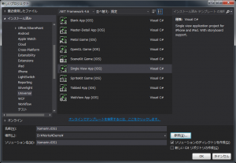
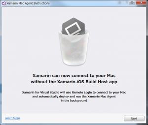

1,2年前にせっかく購入したXamarinを無駄にした私ですが何か？
Problem
無料になったので気軽になりましたね(白目) で、Visual Studio 2015 Professionalは持っているので、Update2にすれば簡単に使えるの？と思ったけどそうではなかったのでメモ。 既存ユーザで私みたいなお金をどぶにした人はいないので、きっと情報が少ないのでしょう。
Resolution
インストール手順を書いていきます。基本一本道ですが。
Update2
まず、Visual Studio 2015 Update2 を適用しておきます。これ必要なのか？念には念を、というやつです。
Xamarin for Visual Studio
次に、https://www.xamarin.com/download から、Xamarin for Visual Studioインストーラを入手できます。 会社名とかは個人なので適当に。
{kind=link}
{kind=link}
起動してからContinueボタン押下してから、凄い時間がかかりました。バックグラウンドで動いているのは確認したんですが。
{kind=link}
{kind=link}
I agree to license terms にチェック。
{kind=link}
Android SDK のインストール先に問題がなければNext。
{kind=link}
Visual Studioが起動していることを検知して、落とすことを推奨しています。やだこの子賢い。
{kind=link}
次へ。 
{kind=link}
{kind=link}
I’m ready!!
Check it out!!
インストールが完了したので、Visual Studioの新規プロジェクトを確認してみます。 Cross-Platform というのが増えています。
{kind=link}
とりあえず、**Single View App (iOS)**を選択。 
{kind=link}
{kind=link}
お、Macとの接続を実施するウィザードが。 これはツール->iOS->Xamarin Mac Agentから起動できる模様。 
{kind=link}
{kind=link}
{kind=link}
{kind=link}
OKしてみると、接続失敗。今Macが更新中でしたので。そもそも設定していません。
{kind=link}
Mac側もXamarin Installerをダウンロードしてきてインストールします。 このあたりは、ちょまど様のMac に Xamarin 使ってみた！インストール〜実行まで【完全無料】をどうぞ。 (VNC経由のためスクリーンショットがとれないため…) 次に、Mac側のシステム環境設定から共有を選択します。で、リモートログインというのが、左側にあるのでチェックして有効にします。 あとは必要なユーザに許可を出して終了です。 で、Visual Studioから再度Xamarin Mac Agentを起動すると、すぐにMacを検出してくれます。以前のXamarinより精度がいいです。
{kind=link}
Connetボタンを押下して、Macのユーザ名とパスワードを入力。
{kind=link}
しばらくすると、ダイアログが消えます。 すると、Visual Studioのツールバーに接続が完了したことを通知するアイコンが表示されます。
{kind=link}
F5でビルド+デバッグか、と思ったら無反応。 ビルドはShift+F6とのこと。 まずはビルドだけ実行。 が、失敗。 No valid iOS code signing keys found in keychain. You need to request a codesigning certificate from https://developer.apple.com. 訳：有効なiOSのコードサインキーがキーチェーンにないよ。https://developer.apple.comからコードサイニング証明書を要求する必要があるよ。
{kind=link}
うーん、以前はできたのに。 実機に対して実行になってるのかと思って、おもむろに先の接続完了アイコンの右側にあるShow iOS Simulatorボタンを押下してみる。 が、Mac側でエラー。
{kind=link}
PC設定のカルマ様のMac - ダウンロードしたアプリケーションの実行許可にて対応策が。 とりあえず、システム環境設定->セキュリティとプライバシー->一般->鍵ロック解除->すべてのアプリケーションを許可に変更して再度実行。
{kind=link}
また警告が出たので開くで続行。
ようやく出たー。 Safariアイコンが出るまでが遅かったけど。
{kind=link}
環境構築はこれで完了?
Conclusion
とても長かったですが、一歩前進ですかね。私としてはStoryboardがVisual Studioで使えるようになり簡単にデザインできるのを楽しみにしているわけです。 Xamarin.Formsだとまた何か違うのでしょうけど。